Lecture 18 Workbook
This workbook holds the notes and the questions for Lecture 18. Each section starts with notes that explain everything on the slides, and a little more. Answer the questions as we discuss the slides. For a multiple-choice question, circle one letter. Section 8 is the bike rental problem, to do at home as practice. Section 10 has two complete programs to write after class. By the end, you should be able to:
- override a superclass method, and use
@Overrideto have the compiler check it; - say which method runs for a call, by starting the lookup in the object's class;
- call the superclass version of a method with
super; - override
toString()so thatprintlnshows an object's contents; - override
equalsandhashCodetogether, and tell==fromequals; - choose between inheritance and a field (composition), and explain a
finalclass; and - write complete programs whose classes override
toString,equalsandhashCode.
1. Overriding
The notice board so far
In Lecture 17 the board kept every notice in one ArrayList<Notice>. TextNotice, EventNotice and JobNotice extend Notice, and each has its own printSummary(). Notice itself had no printSummary().
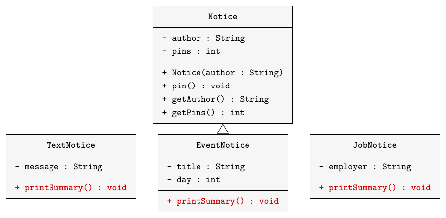
The loop in show() has the loop variable Notice notice. The compiler checks each call against that declared type, and Notice has no printSummary(). So the loop could print only what every notice has:
public void show()
{
for(Notice notice : notices) {
System.out.println(notice.getAuthor() + " pins: " + notice.getPins());
}
}The demo is the one from Lecture 17: ada's text notice, pinned twice; bo's event "Hackathon" on day 12, pinned once; chen's text notice "Lost calculator."; and dara's job at the Campus Bookstore. The board prints no message, no event title and no employer:
ada pins: 2 bo pins: 1 chen pins: 0 dara pins: 0
The fix: printSummary() in Notice
We give Notice its own printSummary(). It prints what every notice has, the author and the pins. Now the call notice.printSummary() compiles, because the declared type Notice has the method.
public void printSummary()
{
System.out.println(author + " pins: " + pins);
}Overriding
Now Notice and each subclass have a method with the same name and the same parameters (none). When a subclass has a method with the same name and the same parameter types as a method of its superclass, the subclass method overrides the superclass method. For a TextNotice object, the TextNotice version runs, and the Notice version does not.
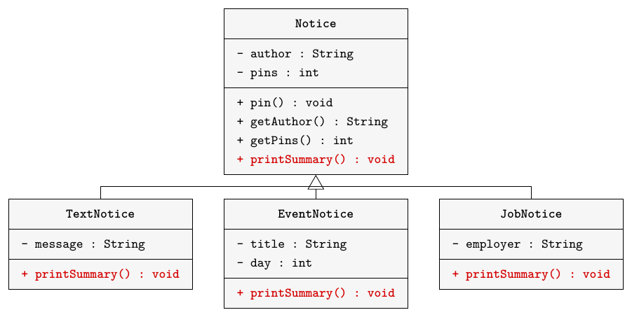
The three subclasses did not change. Their methods were already there; adding the method to Notice is what makes them overrides. Here is TextNotice:
public class TextNotice extends Notice
{
private String message;
public TextNotice(String author,
String message)
{
super(author);
this.message = message;
}
@Override
public void printSummary()
{
System.out.println(getAuthor() + ": " + message);
System.out.println(" pins: " + getPins());
}
}@Override
The line @Override above the method is an annotation. It asks the compiler to check that the method really overrides a method of the superclass. Without it, a typo such as printSumary() would quietly make a new method, and the Notice version would run for text notices. With @Override, the typo is a compile error:
error: method does not override or implement a method from a supertype
Write @Override on every method that overrides one.
The new loop
The loop in show() now calls printSummary(), and each notice prints its own detail:
for(Notice notice : notices) {
notice.printSummary();
}ada: Study group at 4pm. pins: 2 bo: Hackathon, day 12 pins: 1 chen: Lost calculator. pins: 0 dara: job at Campus Bookstore pins: 0
Practice
1.1 Before the fix, why could the loop in show() not call printSummary(), although every object in the list had one?
1.2 Notice has public void printSummary(). Each header below is written in TextNotice, with @Override above it. Write yes or no: does it override Notice's method, so that it compiles?
Header in TextNotice | Overrides? |
|---|---|
public void printSummary() | |
public void printSummary(String prefix) | |
public void printsummary() | |
public void print() |
1.3 What does @Override do?
- It makes the method override the superclass method.
- It asks the compiler to check that the method overrides a superclass method.
- It runs the superclass method first.
- It stops subclasses from overriding the method.
1.4 Suppose TextNotice's method is misspelled printSumary() and has no @Override. What does the board print for chen's notice?
- Nothing: the program does not compile.
chen: Lost calculator.and thenpins: 0chen pins: 0- An exception, because the method is missing.
1.5 Which change made notice.printSummary() compile inside the loop?
- Adding
@Overrideto the three subclasses. - Adding
printSummary()toNotice. - Changing the list to
ArrayList<TextNotice>. - Casting each notice to
TextNotice.
2. Lookup
Two decisions
In Lecture 17 we met the declared type of a variable, the type written in its declaration, and the actual type, the class of the object it refers to. (The textbook calls them the static type and the dynamic type.) A call such as n.printSummary() involves two decisions, made at two different times.
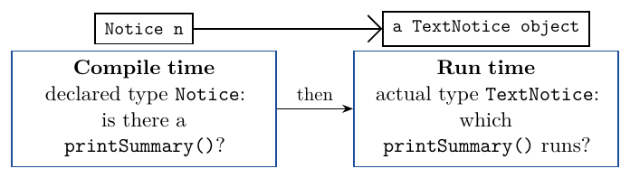
- When the program is compiled, the declared type decides whether the call is allowed.
- When the program runs, the actual type decides which method runs.
Method lookup
When a method is called, Java finds the method to run in this way. It starts in the class of the object. If that class has the method, that method runs. If not, Java goes up to the superclass and looks there, then to its superclass, and so on. The first method it finds runs, and only that one. This is called dynamic method lookup. The compiler has already made sure that some class on the way up has the method, so the search always ends.
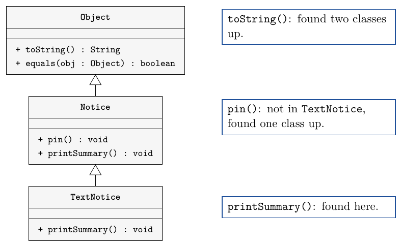
Here is a trace for chen's notice:
Notice n = new TextNotice("chen", "Lost calculator.");
n.printSummary();chen: Lost calculator. pins: 0
The variable n is declared Notice, so the call compiles. The object is a TextNotice, so the lookup starts in TextNotice, finds printSummary() there and runs it. A call n.pin() would start in TextNotice too, find nothing, and go up to Notice.
No override
Suppose JobNotice had no printSummary(). For dara's notice, the lookup starts in JobNotice, finds nothing, and goes up to Notice. The board's last line is then the Notice version, with no employer:
dara pins: 0
Method polymorphism
In the loop of show(), the same line, notice.printSummary(), runs TextNotice's method for ada, EventNotice's for bo, TextNotice's for chen and JobNotice's for dara. One call runs a different method for each kind of object. This is method polymorphism: the object decides which method runs, not the variable.
Practice
2.1 The notice classes are as in Section 1, and none of them has its own toString(). After the lines below, write the class whose method runs for each call.
Notice j = new JobNotice("dara", "Campus Bookstore");
TextNotice t = new TextNotice("eli", "Room 2 is free.");
Notice p = new Notice("fay");| Call | Method found in |
|---|---|
j.printSummary() | |
j.getAuthor() | |
t.printSummary() | |
t.pin() | |
p.printSummary() | |
j.toString() |
2.2 Suppose EventNotice has no printSummary(), and the other classes are as in Section 1. What does the board print for bo's event notice, which was pinned once? Explain.
| Line | Printed |
|---|---|
| 1 |
Explain.
2.3 In your own words, what is method polymorphism? Use the loop in show() as the example.
2.4 Notice n = new EventNotice("bo", "Hackathon", 12); What decides whether n.printSummary() compiles?
- The declared type of
n,Notice. - The actual type of the object,
EventNotice. - Whether
EventNoticehas@Override. - Whether the program has created an event notice yet.
2.5 With the same n, which printSummary() runs?
Notice's, becausenis declaredNotice.EventNotice's, because the object is an event notice.- Both,
Notice's first. - Both,
EventNotice's first.
2.6 n refers to a TextNotice. Where does the lookup for n.pin() find the method?
- In
TextNotice. - In
Notice. - In
Object. - Nowhere: the call is a compile error.
3. Super
The same lines in three overrides
Look at the three printSummary() methods of Section 1. Each prints the author and the pins again, although Notice.printSummary() already does exactly that.
// TextNotice
System.out.println(getAuthor() + ": " + message);
System.out.println(" pins: " + getPins());
// EventNotice
System.out.println(getAuthor() + ": " + title + ", day " + day);
System.out.println(" pins: " + getPins());
// JobNotice
System.out.println(getAuthor() + ": job at " + employer);
System.out.println(" pins: " + getPins());super.printSummary()
Inside an override, super.printSummary() runs the superclass version of the method. The override can then add its own lines.
public class TextNotice extends Notice
{
private String message;
public TextNotice(String author,
String message)
{
super(author);
this.message = message;
}
@Override
public void printSummary()
{
super.printSummary();
System.out.println(" " + message);
}
}EventNotice and JobNotice change in the same way. For ada's notice the calls happen in this order:
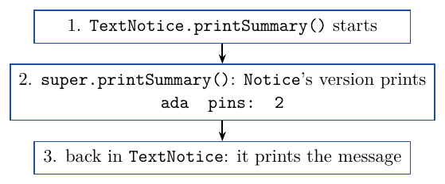
ada pins: 2 Study group at 4pm. bo pins: 1 Hackathon, day 12 chen pins: 0 Lost calculator. dara pins: 0 job at Campus Bookstore
Two points to note.
superis not automatic. An override replaces the superclass method completely, unless it calls it withsuper.- Without
super., the lineprintSummary();calls this same method again, which calls itself again, and so on. The program stops with aStackOverflowError.
In a constructor, super(author) calls the superclass constructor and must be the first line. In a method, super.printSummary() calls a superclass method and may go anywhere in the method.
Access: private, protected and public
The fields author and pins are private, so even a subclass cannot use them directly: in TextNotice, the name author is a compile error, "author has private access in
Notice". That is why the subclasses call getAuthor() and getPins(), or super.printSummary(). Java has a third level of access between private and public:
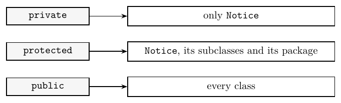
A package is a group of classes. In a BlueJ project every class is in the same package, so there protected works like public. Keep fields private and give subclasses getters. protected suits a helper method that only subclasses should call.
Practice
3.1 The classes are the ones with super above. Write what this code prints.
EventNotice e = new EventNotice("gil", "Chess club", 3);
e.pin();
e.pin();
e.printSummary();| Line | Printed |
|---|---|
| 1 | |
| 2 |
3.2 Write printSummary() for JobNotice. Use super for the first line. For dara's notice it prints dara pins: 0 and then job at Campus Bookstore.
Add printSummary() to the class below. The box includes Notice with its printSummary(), and prints dara's notice.
3.3 In TextNotice's override, the line super.printSummary(); is written as printSummary();. What happens when the board shows ada's notice?
Notice's version runs, as before.- It is a compile error.
- The method calls itself again and again, until the program stops with a
StackOverflowError. - Nothing is printed for ada.
3.4 author is a private field of Notice. Can TextNotice's printSummary() use the name author?
- Yes, because
TextNoticeis a subclass ofNotice. - Yes, but only in a method marked
@Override. - No. It must call
getAuthor(), orsuper.printSummary(). - No, unless
TextNoticeisfinal.
3.5 A method of Notice is declared protected. Where can it be called?
- Only inside
Notice. - In
Notice, its subclasses and the classes of its package. - Only in the subclasses of
Notice. - In every class, like a
publicmethod.
4. toString
Printing an object
What happens when we print a notice?
TextNotice first = new TextNotice("ada", "Study group at 4pm.");
System.out.println(first);TextNotice@41a4555e
println asks the object for its text by calling its toString() method. None of our classes has one, so the lookup goes up to Object. Object's version returns the class name, an @ sign and a number from Object's hashCode() method, written in hexadecimal. The number may be different on your computer.
Overriding toString()
We override toString() to say how a notice looks as text. Notice returns the author and the pins, and each subclass adds its own fields after super.toString():
// In Notice
@Override
public String toString()
{
return author + " [pins: " + pins + "]";
}// In TextNotice
@Override
public String toString()
{
return super.toString() + " " + message;
}Notice.toString() overrides Object's version, so it has @Override too. The method returns the text and does not print it. The caller decides what to do with the text: print it, join it to other text, or keep it. In this version toString() replaces printSummary() in all four classes.
The board prints each notice
show() now passes each notice to println:
for(Notice notice : notices) {
System.out.println(notice);
}ada [pins: 2] Study group at 4pm. bo [pins: 1] Hackathon, day 12 chen [pins: 0] Lost calculator. dara [pins: 0] job at Campus Bookstore
For bo, the lookup for toString() starts in EventNotice and finds its version, which calls Notice's with super:
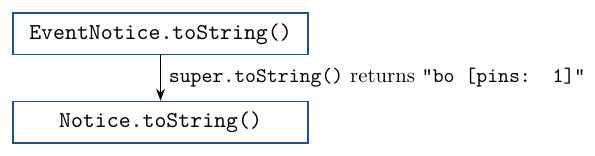
The + operator also calls toString() when one side is a String: "Board: " + notice joins the text with the notice's toString().
Practice
4.1 The classes are the ones with toString() above. Write what this code prints.
Notice n = new EventNotice("bo", "Hackathon", 12);
n.pin();
Notice m = new TextNotice("hal", "Lost keys.");
System.out.println(n);
System.out.println("Found: " + m);| Line | Printed |
|---|---|
| 1 | |
| 2 |
4.2 Write toString() for JobNotice. For dara's notice it returns dara [pins: 0] job at Campus Bookstore.
Add toString() to the class below. The box includes Notice with its toString(), and prints dara's notice.
4.3 Which method does System.out.println(notice) call on the notice?
printSummary()getAuthor()toString()hashCode()
4.4 A class Room does not override toString(). What does System.out.println(room) print?
- Nothing.
- All the fields of the room.
- The class name,
@and a number, such asRoom@1b6d3586. - It is a compile error.
4.5 Why does toString() return the text instead of printing it?
- Because a method of
Objectcannot print. - So that the caller can print the text, join it to other text or keep it.
- Because
printlncannot print aString. - Because a
voidmethod cannot be overridden.
5. Equality
Two notices with the same contents
Here are two text notices with the same author and the same message, and a third variable that refers to the first notice.
TextNotice a = new TextNotice("ada", "Study group at 4pm.");
TextNotice b = new TextNotice("ada", "Study group at 4pm.");
TextNotice c = a;
System.out.println(a == b);
System.out.println(a == c);
System.out.println(a.equals(b));false true false
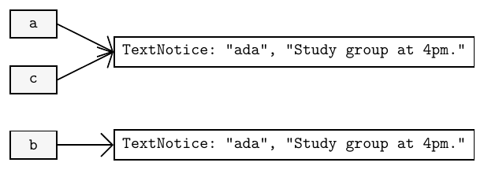
==compares references. It asks: are these the same object? Yes foraandc, no foraandb.equalsshould ask: do these objects have the same contents? But we have not overridden it, soObject's version runs, and it just uses==.
We decide what "equal" means for our own class, and override equals. Two text notices are equal when the author and the message are equal. The pins do not count.
Overriding equals
@Override
public boolean equals(Object obj)
{
if(this == obj) {
return true;
}
if(!(obj instanceof TextNotice)) {
return false;
}
TextNotice other = (TextNotice) obj;
return getAuthor().equals(other.getAuthor())
&& message.equals(other.message);
}- The parameter is an
Object, exactly as inObject's version. A parameter of typeTextNoticewould make a different method that does not override. obj instanceof TextNoticeistruewhenobjrefers to a text notice, andfalsefor any other object or fornull. It is the safe check before the cast, so the cast cannot fail.other.messageis allowed:messageis private to the classTextNotice, and this code is in that class.- The two
Strings are compared withequals, whichStringoverrides to compare the characters.
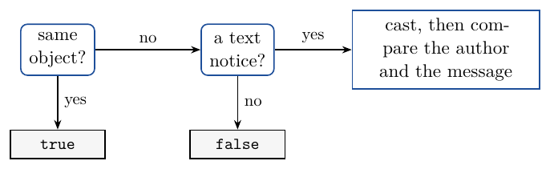
Now a.equals(b) is true, while a == b is still false: they are two objects with the same contents. a.equals("hello") returns false, with no exception. Library classes use equals too: an ArrayList's contains and indexOf methods compare with equals.
hashCode
A HashSet holds no two equal elements. Add both notices to one:
HashSet<TextNotice> set = new HashSet<>();
set.add(a);
set.add(b);
System.out.println(set.size());With only equals overridden, this prints 2, and the compiler (with all warnings on) says why:
warning: [overrides] Class TextNotice overrides equals, but neither it nor any superclass overrides hashCode method
A HashSet first calls hashCode() on the new element, to pick a group of elements to search. Only then does it call equals with each element of that group.
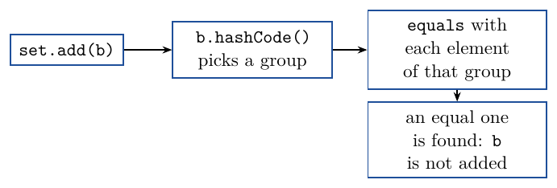
Object's hashCode() usually gives different objects different numbers, so a and b usually land in different groups, and the set never compares them. The rule is: equal objects must have equal hash
codes. So override hashCode whenever you override equals, and use the same fields. Objects.hash(...), from java.util.Objects, builds a hash code from the fields:
@Override
public int hashCode()
{
return Objects.hash(getAuthor(), message);
}With both methods, the set's size is 1.
Practice
5.1 TextNotice overrides equals and hashCode as above. After these lines, write true or false for each expression.
TextNotice p = new TextNotice("eli", "Room 2 is free.");
TextNotice q = new TextNotice("eli", "Room 2 is free.");
TextNotice r = new TextNotice("fay", "Room 2 is free.");
TextNotice s = q;| Expression | Value |
|---|---|
p == q | |
p.equals(q) | |
q == s | |
p.equals(r) | |
r.equals(null) |
5.2 Write equals and hashCode for EventNotice. Two event notices are equal when they have the same author, the same title and the same day. The class starts with import java.util.Objects;.
Add the two methods to the class below. The box includes Notice, compares some event notices and puts them in a HashSet.
5.3 Why must two equal objects have equal hash codes?
5.4 What does a == b compare, when a and b are TextNotice variables?
- The authors and the messages.
- Whether
aandbrefer to the same object. - The hash codes of the two objects.
- Whatever
TextNotice'sequalscompares.
5.5 Why is the parameter of equals declared Object, not TextNotice?
- With
Objectit overridesObject'sequals; withTextNoticeit would be a different method. - An
Objectparameter makes the method faster. instanceofworks only on anObject.- A
TextNoticeparameter is a compile error.
5.6 TextNotice overrides equals but not hashCode. Ada's two equal notices a and b are added to an empty HashSet. What does set.size() return?
- 0
- 1
- 2
- It throws an exception.
6. Reuse
Inheritance or composition
A board needs a list, and ArrayList<Notice> already has add, get and many more methods. Why not make the board a subclass of the list?
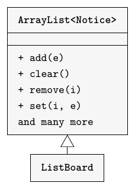
, which has add(e), clear(), remove(i), set(i, e) and many more methods." loading="lazy" style="max-width: 420px">import java.util.ArrayList;
public class ListBoard
extends ArrayList<Notice>
{
}It compiles, and ListBoard inherits every list method. That is the problem: board.clear() and board.remove(0) compile too, so any code can wipe the board, and the board cannot stop it. The is-a test also fails: a notice board is not a list. It has a list.
Our NoticeBoard keeps the list in a private field and offers only addNotice and show. Building a class from objects held in its fields is called composition. Use inheritance when the subclass really is a kind of the superclass, as a text notice is a kind of notice. Otherwise, use a field.
Final classes
A class declared final cannot have subclasses.
public final class TextNotice extends Notice
public class UrgentNotice extends TextNoticeerror: cannot inherit from final TextNotice
A subclass could override methods and break a promise the class makes, for example how its equals works. final rules that out. String is a final class, so nobody can change how strings behave. Most classes stay open, and so do ours. A single method can be declared final too; then no subclass can override that method.
Practice
6.1 Give two reasons why NoticeBoard should have an ArrayList<Notice> field rather than extend ArrayList<Notice>.
6.2 Which of these is composition?
TextNotice extends NoticeListBoard extends ArrayList<Notice>NoticeBoardhas a fieldprivate ArrayList<Notice> notices.Noticehas@OverrideontoString().
6.3 TextNotice is declared public final class TextNotice extends Notice. Which line is a compile error?
Notice n = new TextNotice("ada", "Hi");public class UrgentNotice extends TextNoticepublic class PhotoNotice extends NoticeTextNotice t = new TextNotice("bo", "Hi");
7. Whole program
The class diagram
Here is the whole program, in its toString() version. Every notice class overrides toString(), and printSummary() is gone. NoticeBoardDemo makes the four notices of Section 1, and show() prints them as in Section 4.
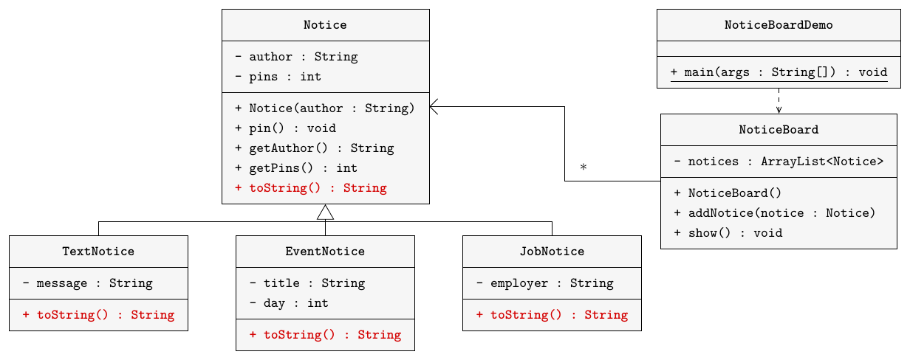
, NoticeBoard(), addNotice(notice) and show(), and an arrow marked * to Notice." loading="lazy" style="max-width: 640px">A new kind of notice
A new kind of notice needs only a new class. The board calls println on each notice, and the lookup finds the new class's toString(). The board itself does not change.
Practice
7.1 Write a class PhotoNotice extends Notice with a field caption, a constructor PhotoNotice(String author, String caption) and toString(). When fay's photo "Campus at dawn", pinned once, is on the board, show() prints fay [pins: 1] photo: Campus at dawn.
The box includes the notice classes and the board, and puts eli's text notice and fay's photo on the board.
7.2 When PhotoNotice is added, what must change in NoticeBoard?
- A new loop in
show()for photo notices. - A cast to
PhotoNoticeinside the loop. - A new method
addPhotoNotice. - Nothing.
7.3 In show(), the loop variable notice is declared Notice. When it refers to bo's event notice, which toString() does println(notice) run first?
Notice's, the declared type.EventNotice's, which then callsNotice's.Object's.NoticeBoard's.
8. Practice
This section is the bike rental problem, to do at home as practice. Try each part before you read its solution.
The starter program
A rental shop has bikes and e-bikes. The rate of a bike is in dollars per hour. EBike extends Bike and, so far, adds nothing.
public class Bike
{
private String id;
private int rate;
public Bike(String id, int rate)
{
this.id = id;
this.rate = rate;
}
public String getId()
{
return id;
}
public int cost(int hours)
{
return rate * hours;
}
}public class EBike extends Bike
{
public EBike(String id, int rate)
{
super(id, rate);
}
}The demo puts bike B1 at 4 dollars an hour, bike B2 at 5 and e-bike E1 at 6 into one ArrayList<Bike>, and prints each with its cost for 3 hours:
for(Bike bike : fleet) {
System.out.println(bike + ": 3 hours, $" + bike.cost(3));
}Bike@3830f1c0: 3 hours, $12 Bike@7d6f77cc: 3 hours, $15 EBike@5aaa6d82: 3 hours, $18
Part 1: Overrides
Write the three methods in red. Bike.toString() returns the id and the rate, as in B1 ($4/h). An e-bike costs the bike price plus a $5 battery fee, and its toString() adds " electric". Use super in both EBike methods.
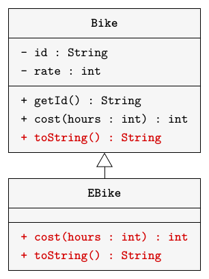
B1 ($4/h): 3 hours, $12 B2 ($5/h): 3 hours, $15 E1 ($6/h) electric: 3 hours, $23
Part 2: Equality
Two bikes are equal when they have the same id. Write equals and hashCode in Bike. The new demo prints the three lines of Part 1. Then it makes a new Bike("B1", 4), called returned, and prints whether B1 equals it. Last, it adds B1, E1 and returned to a HashSet<Bike> and prints its size:
true Bikes out: 2
Practice
8.1 Write toString() for Bike (Part 1).
Add toString() to the starter Bike below. The box includes the starter EBike and runs the demo.
8.2 Write the class EBike for Part 1, with its two overrides.
The box includes a model Bike with the toString() of 8.1, and runs the demo.
8.3 Write equals and hashCode for Bike (Part 2).
Add the two methods to Bike. The box includes the Part 1 EBike and runs the Part 2 demo.
8.4 In EBike, the line return super.cost(hours) + 5; is written as return cost(hours) + 5;. What happens when the demo runs, and why?
8.5 In the demo's loop, bike is declared Bike. For E1, which cost runs first?
Bike's, becausebikeis declaredBike.EBike's, which then callsBike's withsuper.- Both,
Bike's first, thenEBike's. Object's.
8.6 With the Part 2 equals, what is new Bike("B1", 4).equals(new Bike("B1", 6))?
truefalse- It is a compile error.
- It throws an exception.
9. Review
Overriding and lookup
A subclass method with the same name and parameters as a superclass method overrides it; mark it @Override so that the compiler checks. The declared type decides whether a call compiles, and the class of the object decides which method runs: the lookup starts in that class and goes up, and the first method found runs. super.method() runs the superclass version from inside an override. println calls toString(), so override it to describe your objects. == asks whether two references are the same object; override equals and hashCode together, with the same fields, to compare contents. Use a field, not inheritance, when the is-a test fails, and declare a class final when it must have no subclasses.
Practice
9.1 Write true or false for each statement.
| Statement | True or false? |
|---|---|
| An override has the same name and parameters as the superclass method. | |
| The declared type decides which override runs. | |
super.printSummary() runs the superclass version. | |
Object's equals compares the fields of two objects. |
9.2 Which two methods should always be overridden together?
toStringandequalsequalsandhashCodehashCodeandtoStringprintSummaryandtoString
9.3 This version of TextNotice has two mistakes, and each one stops it from compiling. Find both and give a fix for each.
public class TextNotice extends Notice
{
private String message;
public TextNotice(String author, String message)
{
super(author);
this.message = message;
}
@Override
public void printSummary(String prefix)
{
System.out.println(prefix + message);
}
@Override
public String toString()
{
System.out.println(getAuthor() + ": " + message);
}
}Now fix both mistakes in the box. The box includes Notice, and prints a text notice and its summary.
10. Complete Java Programs
Write these two programs after class. Each reuses classes from Lecture 17's complete programs, and adds the methods of this lecture.
Program A: Fleet
Vehicle(String plate)hasdrive(int distance),getPlate()andgetKm(), as in Lecture 17. AddtoString(), which returns text such asCAR-7: 30 km.Truck(String plate, int maxLoad)extendsVehicleand hasgetMaxLoad(). ItsprintDetails()is replaced bytoString(), which usessuperand returns text such asTRK-42: 150 km, max load 900 kg.Fleethas one private fieldArrayList<Vehicle> vehicles.add(Vehicle vehicle)adds a vehicle.printAll()prints each vehicle withprintln.totalKm()returns the total distance.FleetDemomakes the vehicleCAR-7, the truckTRK-42with a maximum load of 900, and the vehicleVAN-3. The car drives 30 km, the truck 100 km and then 50 km, and the van 20 km. It adds the three to a fleet in that order, and prints them all and the total.
VehicleThe box drives a vehicle and prints it.
TruckThe box includes a model Vehicle class, drives a truck and prints it.
FleetThe box includes model Vehicle and Truck classes and runs FleetDemo.
The demo prints:
CAR-7: 30 km TRK-42: 150 km, max load 900 kg VAN-3: 20 km Total: 200 km
Program B: Show
Ticket(String seat, int price)hasgetSeat()andgetPrice(), as in Lecture 17. AddtoString(), which returns text such asA3: 20 dollars. Two tickets are equal when they are for the same seat: addequalsandhashCode.StudentTicket(String seat, int price, String studentId)extendsTicketand hasgetStudentId(). ItstoString()usessuperand returns text such asB12: 15 dollars, student 2001234.Showhas one private fieldArrayList<Ticket> tickets.sell(Ticket ticket)adds the ticket and returnstrue, unless an equal ticket was already sold; then it adds nothing and returnsfalse. Use the list'scontains, which callsequals.printSeats()prints each ticket withprintln, andtotalSales()returns the total of the prices.ShowDemosells a ticket for seat A3 at 20 dollars, a student ticket for seat B12 at 15 dollars to student 2001234, and a ticket for seat C5 at 25 dollars. Then it tries to sell another ticket for seat A3, at 30 dollars, and printsA3 already soldwhensellreturnsfalse. Last, it prints the seats and the total.
TicketThe box prints a ticket and compares tickets for the same seat and for different seats.
StudentTicketThe box includes a model Ticket class and prints a student ticket.
ShowThe box includes model Ticket and StudentTicket classes and runs ShowDemo.
The demo prints:
A3 already sold A3: 20 dollars B12: 15 dollars, student 2001234 C5: 25 dollars Total: 60 dollars
Lecture summary
A subclass can replace a superclass method with its own version. Java picks the version that runs from the class of the object, so one loop over a list of notices prints each kind its own way.
Overriding
- The loop in
show()could not callprintSummary(), because the declared typeNoticehad no such method. The fix is aprintSummary()inNotice. - A subclass method with the same name and the same parameters as a superclass method overrides it. For a
TextNoticeobject, theTextNoticeversion runs. - Write
@Overrideon every override. The compiler then checks it, and a typo such asprintsummary()is a compile error instead of a new method.
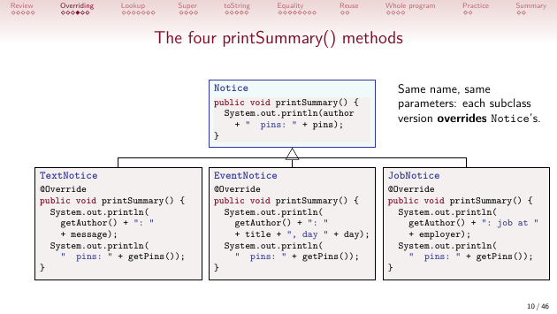
Lookup
- Two decisions: at compile time the declared type decides whether a call is allowed; at run time the actual type decides which method runs.
- Method lookup starts in the class of the object and goes up to the superclass, and so on. The first method found runs.
- One call, a different method for each kind of object: this is method polymorphism.
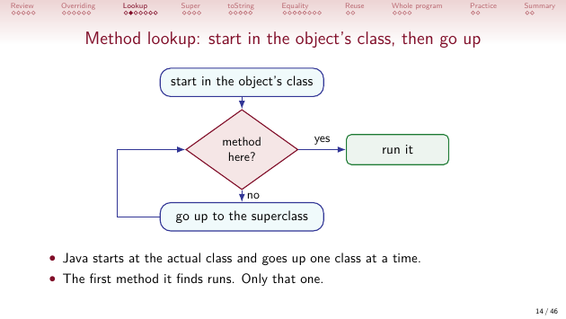
Super
super.printSummary()runs the superclass version from inside an override, so the subclass adds only its own lines.- Without
super., the method calls itself again and again, and the program stops with aStackOverflowError. privatefields are not visible in a subclass; use the getters.protectedopens a member to subclasses and the package.
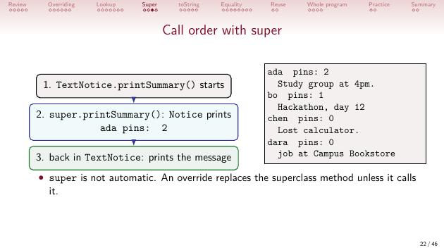
toString
printlncallstoString().Object's version prints the class name, an@and a number, such asTextNotice@41a4555e.- Override
toString()to return the text. Each subclass adds its fields aftersuper.toString(), and the board just prints each notice.
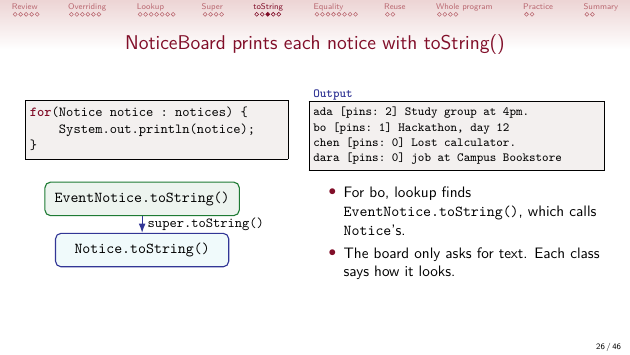
Equality
==asks whether two references are the same object.Object'sequalsdoes the same, so we overrideequalsto compare the contents.equalstakes anObject: check for the same object, theninstanceof, then cast and compare the fields.- Equal objects must have equal hash codes. Override
hashCodetogether withequals, using the same fields, or aHashSetkeeps two equal elements.
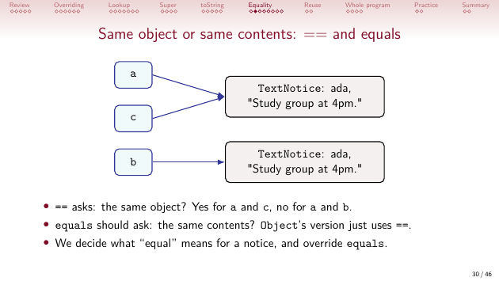
Reuse
- A board has a list; it is not a list. Keep the list in a private field (composition) rather than extend
ArrayList. - A
finalclass cannot have subclasses, and afinalmethod cannot be overridden.
Practice and programs
- In the bike shop,
EBikeoverridescostandtoStringwithsuper, andBikeoverridesequalsandhashCodeon the id. FleetandShowprint each element withprintln.Showrefuses a seat that was already sold, becausecontainscalls theequalsofTicket.- The next lecture introduces abstract classes.